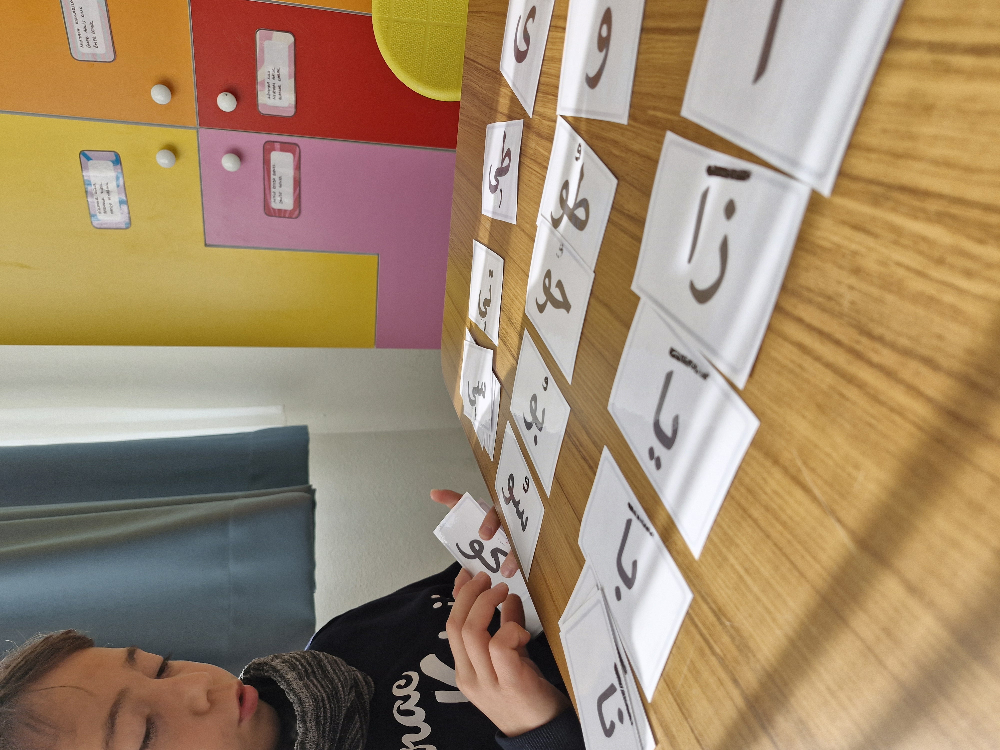
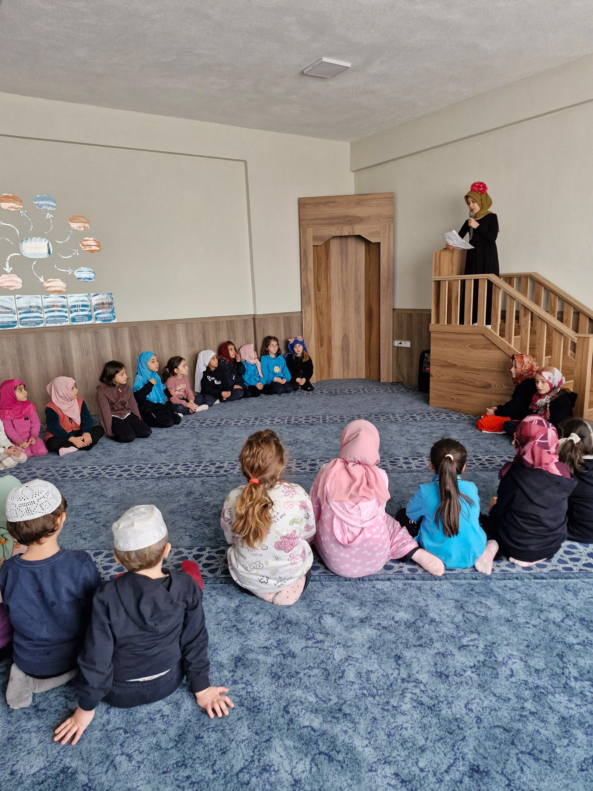

Manevi Değerlerimiz
Öğrencilerimizin akademik başarılarının yanı sıra manevi gelişimlerini de önemsiyoruz.
Kur'an-ı Kerim
Tüm sınıf kademelerinde öğrencilerimizin seviyesine göre Kur'an-ı Kerim dersi verilmektedir.
- Uygulamalı tecvid eğitimi
- Yüzünden mahreçli okuma
- Sure ve dua ezberleri
Montessori Metodu: Derslerimiz, geliştirdiğimiz özel materyaller ve akıllı tahta desteğiyle interaktif ve kalıcı şekilde işlenmektedir.

Temel Dini Bilgiler
Ahlaklı bir nesil yetiştirme gayesiyle, öğrencilerimize yaşlarına uygun pedagojik dini eğitim veriyoruz.
İman esasları ve ilmihal bilgisi; hikaye, etkinlik ve somut materyaller kullanılarak sevdirilerek anlatılmaktadır.
Mescit Oyunları: Öğrencilerimizin namazı sevmeleri ve alışkanlık kazanmaları için özel oyunlaştırma projeleri uyguluyoruz.

Siyer-i Nebi
Peygamber Efendimiz (s.a.v.)'in örnek hayatı ve güzel ahlakı rehberliğinde bir eğitim.
Kıssalar anlatılarak çocukların problem çözme becerileri geliştirilir. Peygamberimizin örnek şahsiyetiyle erdemli bireyler olmaları hedeflenir.
Sünnet-i Seniyye: Günlük hayatı güzelleştiren sünnetler (selamlaşma, yeme-içme adabı vb.) uygulamalı olarak öğretilip davranışa dönüştürülür.
.JPEG)
Esma-ül Hüsna ve Tefekkür
"Aklın meyvesi tefekkürdür."
Kâinattaki eşsiz dengeyi, yaratılış harikalarını ve nimetleri fark etmek için tefekkür dersleri yapıyoruz. Göklerin, yerin ve doğanın dilini okumayı öğretiyoruz.
Farkındalık: Olaylara ibret nazarıyla bakan, ders çıkaran ve sorumluluk bilinci gelişmiş nesiller hedefliyoruz.
.JPG)